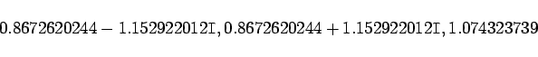

Inhalt Index DeskTop Bronstein

 Numerische Mathematik Nutzung von Computern Anwendung von Computeralgebrasystemen Maple
Numerische Mathematik Nutzung von Computern Anwendung von Computeralgebrasystemen Maple


Wie im (Kapitel Computeralgebrasysteme) erwähnt, kann Maple in vielen Fällen Gleichungen und Gleichungssysteme numerisch lösen. Das ist insbesondere dann von Bedeutung, wenn es sich um transzendente Gleichungen oder um algebraische Gleichungen handelt, die nur im Bereich der reellen Zahlen auflösbar sind.
Dafür wird der Befehl eingesetzt. Er ist in der Syntax
| (19.290) |
zu verwenden. In der Regel wird der Befehl für allgemeine Gleichungen eine einzelne Wurzel bestimmen. Für Polynomgleichungen jedoch liefert er alle reellen Wurzeln. In der folgenden Tabelle sind die zur Verfügung stehenden Optionen angegeben.
| bestimmt eine einzelne komplexe Wurzel (bzw. alle Wurzeln eines Polynoms) | |
| bestimmt zumindest n Wurzeln (gilt nur für Polynomgleichungen) | |
| verhindert die Verkleinerung der Genauigkeit unter die voreingestellte in Zwischenrechnungen | |
| sucht nach Lösungen im angegebenen Intervall |
| Beispiel A |
|
Bestimmung aller Lösungen der Polynomgleichung . Mit 
|
| Beispiel B |
|
Bestimmung der beiden Lösungen der transzendenten Gleichung  |